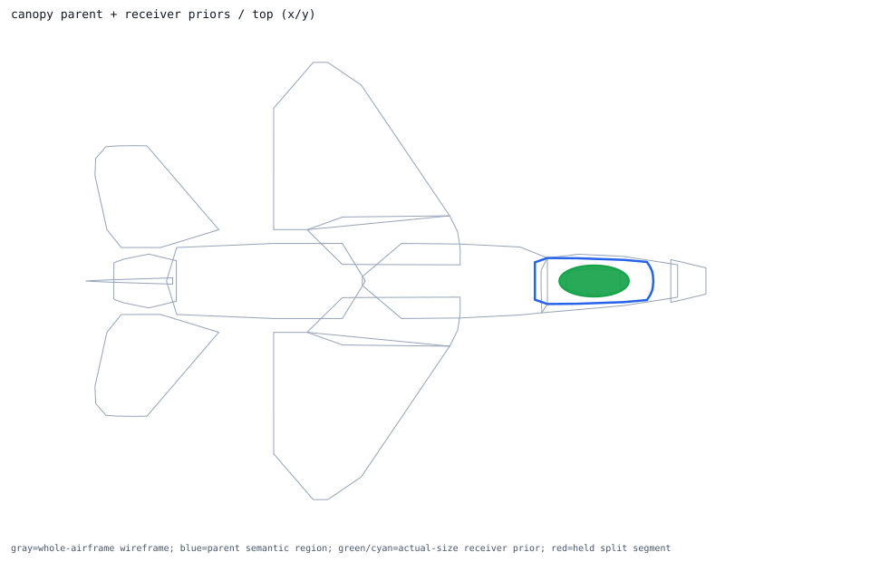
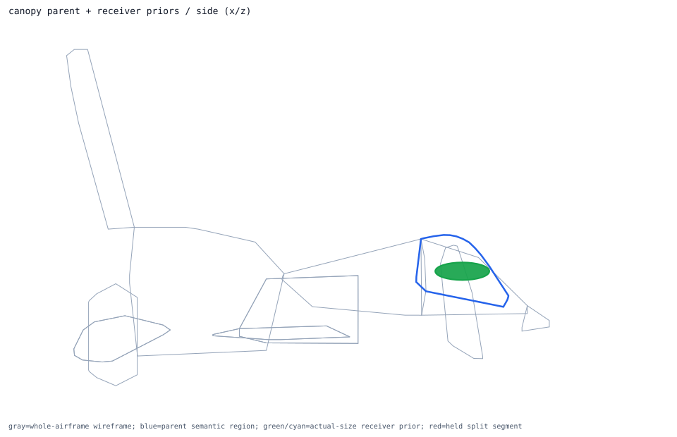
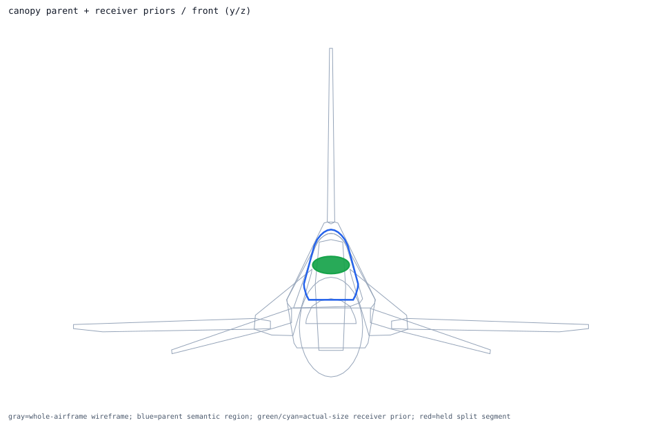

Back to parent-child layout index
semantic_canopy_surface_volume
convex_hull parent -> canopy; receiver overlays 1; extra slots 0
Trace Details
- parent semantic component: semantic_canopy_surface_volume
- parent surface component: surface_canopy
- outer model region: canopy
- volume role: canopy_surface_volume
- geometry primitive: convex_hull
- primary receiver: dedicated_canopy_surface_component
- extra receivers: none
- cross-region held receivers: none
- external held split segments: none
- parent handoff: direct_receivers_parse_ready
- layout policy: one_parent_semantic_shell_view_with_receiver_priors_overlaid
- runtime projection: review_only_visual_layout_not_runtime_activation
- child overlays:
- single_receiver_overlay: dedicated_canopy_surface_component ellipsoid dims=[1.496, 0.66, 0.196]m evidence=asset_mesh_derived_surface_not_public_engineering_dimension segments=0 -> already_inside_whole_airframe
- external held segment overlays:


